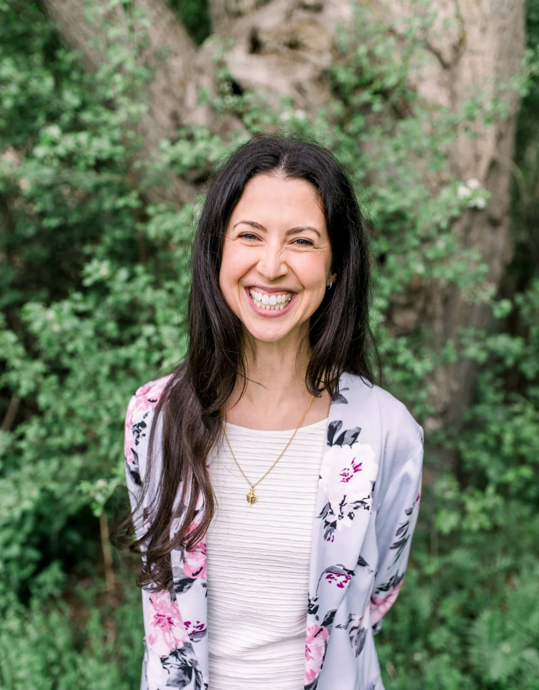

Hello, I'm Cristina.
I’m a parent, healthcare provider and community member running for WRDSB trustee for Waterloo and Wilmot.
I'm a daughter of selfless parents who moved to the Waterloo Region from the Azores, Portugal, and taught me that integrity, hard work, personal responsibility, and service to others are not values to be professed, but principles to be lived. And as much as I have offered a great amount of myself to the Tri-Cities, I also recognize that the Waterloo Region has offered a great amount to me.
I appreciate the opportunities I experienced within an educational system that strove to work for every student. I value individual choice and responsibility, while also recognizing that education does more than impart knowledge—it strengthens the unique gifts and purposes of each child, cultivates the wisdom and discernment to navigate the many forks their journey may offer, and helps shape the character with which they will contribute to a society of diverse perspectives.
Cristina's Commitment to the Waterloo Region
Born and raised in Cambridge, Cristina later lived in downtown Kitchener and now lives in Waterloo with her husband and two sensational sons. As a mother and partner in life, she values the power of being present and showing up. She believes this principle holds true for our schools—and for anything that truly matters.
As a healthcare professional and educator, she has spent years helping others identify challenges, evaluate evidence, and uncover root causes in order to work toward practical, sustainable solutions. She is driven to foster leadership and lifelong learning within individuals, families, and communities.
As a Home (Human) Economist, Cristina is a trained professional who applies knowledge from the social and natural sciences to improve the everyday living conditions of individuals, families, and communities.
For several years, she has brought that same energy to public education. Cristina has attended nearly every Board meeting, delegated repeatedly before trustees, served on her children’s Parent (School) Council, the Parent Involvement Committee (PIC), and Waterloo Region Assembly of Public School Councils (WRAPSC), funded Freedom of Information requests and appeals, organized parent information evenings, met with elected officials including the Minister of Education, and helped build EMPOWR, a grassroots parent organization that has connected families through public events, a podcast and Substack.
Among the most meaningful aspects of this work has been helping families navigate contentious Board policies, advocate directly for change, challenge decisions through formal processes, and create opportunities for parents and educators to participate more meaningfully in public education. This advocacy has resulted in tangible changes at the school level and has also drawn wider public and media attention.
Cristina has spoken at events across Ontario, appeared in media coverage relating to public education and parental participation, and provided testimony as a witness before the National Citizens Inquiry. Through that work, she has spoken with thousands of parents, teachers, educational staff, administrators and citizens—giving her a perspective on the system that cannot be gained from Board reports alone.
These conversations have given her a grounded understanding of what is working, where families feel shut out, where teachers need greater support, and how public participation must be strengthened.
Cristina believes government and public service exist to work for the people—not the other way around. She is passionate about bringing systems back to their proper purpose: serving the public and acting as responsible stewards of citizens’ time and resources.
To read more about why Cristina is running and what she sees as the top priorities, click here.
I am grateful to the Region of Waterloo.
I am grateful for the opportunities I experienced within an educational system that strove to serve every student. Those experiences helped shape who I am and, ultimately, how I serve others. Today, I am driven to cultivate leadership, curiosity and a lifelong love of learning—not only within individuals, but within the families and communities that shape them.